黄玮
转发代理
* 视具体代理服务实现技术而定
威胁网络安全检测、监测、审计机制
网络安全的 对抗 本质在「代理技术」的应用中体现地淋漓尽致。
`* 和HTTP 代理的工作模式有关
<浏览器名称> 设置代理
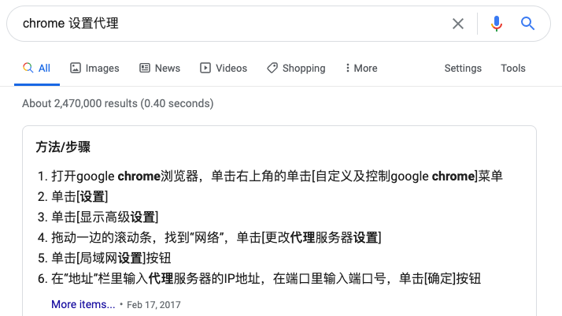
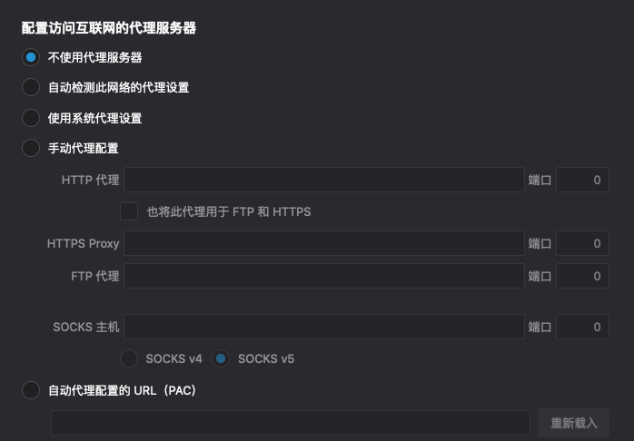
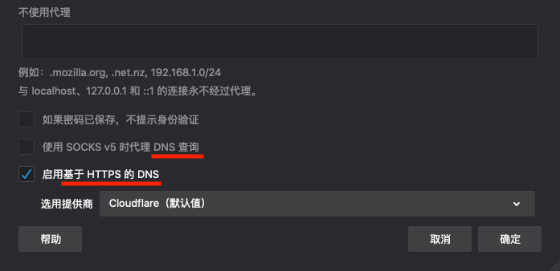
代理服务器 审查用户的 访问请求 和服务器 响应内容 ？X-Forwarded-For (XFF)
X-Forwarded-For: client1, proxy1, proxy2X-Forwarded-For 字段X-Forwarded-For 字段| REMOTE_ADDR | HTTP_VIA | HTTP_X_FORWARDED_FOR | |
|---|---|---|---|
| 透明代理 | 最后一个代理服务器IP | 代理服务器IP或内部代理别名 | 客户端真实IP，或（经过多个代理时）遵循XFF标准 |
| 普通匿名 | 最后一个代理服务器IP | 代理服务器IP或内部代理别名 | 部分遵循XFF标准（隐藏客户端真实IP） |
| 欺骗代理 | 代理服务器IP | 代理服务器IP或内部代理别名 | 伪造经过的代理服务器IP列表 |
| 高匿名代理 | 代理服务器IP | 无数值或不显示 | 无数值或不显示 |
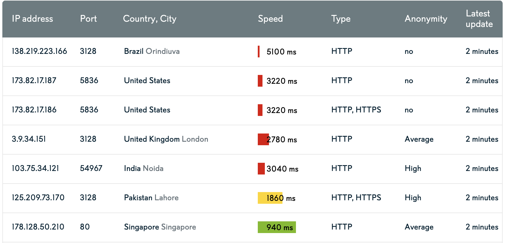
// proxy.php
<?php
var_dump($_SERVER);# 开启 PHP 测试用服务器
php -S 0.0.0.0:8080 proxy.php# 使用 curl 模拟使用代理服务器的客户端
curl -H "X-Forwarded-For: 8.8.8.8" http://127.0.0.1:8080/proxy.php
# 样例输出（节选）
# array(18) {
# ["REMOTE_ADDR"]=>
# string(9) "127.0.0.1"
# ["HTTP_X_FORWARDED_FOR"]=>
# string(7) "8.8.8.8"
# }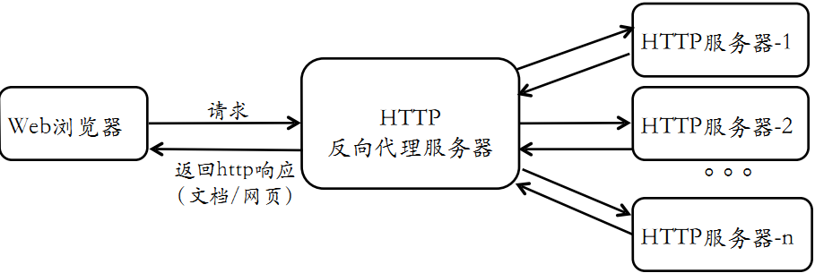
HSTS 强制客户端和服务器之间的所有通信流量必须使用 HTTPSHSTS 的实现强烈依赖于「客户端」支持
HSTS 站点名单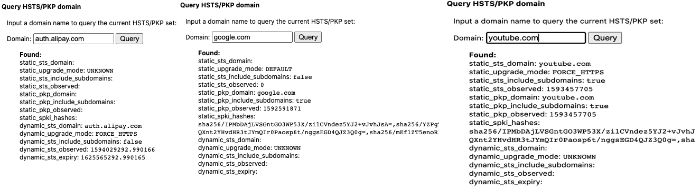
auth.alipay.com 只有访问一次才能被「记忆」
# 安装 tinyproxy
apt update && apt install tinyproxy
# 启动 tinyproxy
systemctl start tinyproxy
# 访问前述 proxy.php
curl -x http://127.0.0.1:8888 http://127.0.0.1:8080/proxy.php
# array(19) {
# ["REMOTE_ADDR"]=>
# string(9) "127.0.0.1"
# ["HTTP_HOST"]=>
# string(14) "127.0.0.1:8080"
# ["HTTP_VIA"]=>
# string(32) "1.1 tinyproxy (tinyproxy/1.10.0)"
# }
# 在客户端请求头中加入客户端真实 IP
sed -i.bak "s/#XTinyproxy Yes/XTinyproxy Yes/" /etc/tinyproxy/tinyproxy.conf
# 重启 tinyproxy 服务
systemctl restart tinyproxy
# 在独立 shell 窗口开启 tinyproxy 日志监控小程序
tail -F /var/log/tinyproxy/tinyproxy.log
# 访问 HTTPS 站点
curl -x http://127.0.0.1:8888 https://auth.alipay.com/login/index.htm
# 查看
# CONNECT Jul 06 17:17:15 [7672]: Connect (file descriptor 7): localhost [127.0.0.1]
# CONNECT Jul 06 17:17:15 [7672]: Request (file descriptor 7): CONNECT auth.alipay.com:443 HTTP/1.1
# INFO Jul 06 17:17:15 [7672]: No upstream proxy for auth.alipay.com
# INFO Jul 06 17:17:15 [7672]: opensock: opening connection to auth.alipay.com:443
# INFO Jul 06 17:17:15 [7672]: opensock: getaddrinfo returned for auth.alipay.com:443
# CONNECT Jul 06 17:17:15 [7672]: Established connection to host "auth.alipay.com" using file descriptor 8.
# INFO Jul 06 17:17:15 [7672]: Not sending client headers to remote machine
# INFO Jul 06 17:17:15 [7672]: Closed connection between local client (fd:7) and remote client (fd:8)
# 查看 HSTS 响应头
curl -I -x http://127.0.0.1:8888 https://auth.alipay.com/login/index.htm
# HTTP/1.0 200 Connection established
# Proxy-agent: tinyproxy/1.10.0
#
# HTTP/2 302
# server: nginx/1.6.2
# date: Mon, 06 Jul 2020 09:19:07 GMT
# content-length: 0
# location: https://authsa127.alipay.com:443/error.htm?exception_marking=the+requestMethod+%5BHEAD%5D+is+not+supported+by+handlers%2Cyou+can+try+with+%5BGET%2CPOST%5D%21&messageCode=common.uncaughtException
# set-cookie: zone=RZ54A; Domain=.alipay.com; Path=/
# strict-transport-security: max-age=31536000
# set-cookie: JSESSIONID=05BCA44886FEE4B2C3368F9167D55C83; Path=/; HttpOnly
# set-cookie: JSESSIONID=05BCA44886FEE4B2C3368F9167D55C83; Path=; HttpOnly
# set-cookie: ALIPAYJSESSIONID=RZ54drLXXabsSYlmZr5T8qeGb1zCKyauthRZ54; Domain=.alipay.com; Path=/
# set-cookie: ctoken=UH5ZAmhY7PZUtB7I; Domain=.alipay.com; Path=/
# content-language: zh-CN
# set-cookie: spanner=8YfCP1RF/xNEmob8naEHjZVRrhGwKYJXXt2T4qEYgj0=;path=/;secure;
# via: spanner-internet-5405.sa127[302]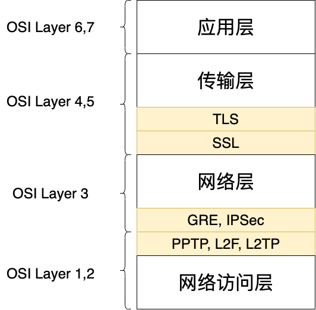
| PPTP | L2TP/IPSec | OpenVPN | |
|---|---|---|---|
| 背景 | PPP, MS oldest VPN, No Enc/Auth | RFC3193 | 开源VPN解决方案 |
| 数据加密 | MPPE(RSA/RC4/128bit) | L2TP+IPSec, RFC 4835(3DES/AES) | OpenSSL(3DES/AES/RC5/Blowfish) |
| 速度 | 128bit 加密性能略高于 256bit | 数据封装2次，导致性能下降 | UDP模式下性能达到最佳 |
| 安全漏洞 | 爆破 + 比特翻转攻击 | 少, AES-GCM 增加安全性 | 少，AES-GCM 增加安全性 |
| 客户端兼容性 | 全平台 | 全平台 | 全平台 |
| 综合评分 | ★☆☆☆☆ | ★★★★☆ | ★★★★★ |
# 建立宿主机到虚拟机的 SSH 隧道（socks5 代理）
# 推荐使用 Host-only 网卡对应的 VM IP 作为目标 IP
ssh -D 127.0.0.1:1080 cuc@192.168.56.136 -q -C -N -v
# 使用上述建立的 SSH 隧道访问虚拟机内的「本地网页」
curl http://127.0.0.1:8080/proxy.php -x socks5://127.0.0.1:1080
# 使用远程服务器完成 DNS 解析请求
curl http://127.0.0.1:8080/proxy.php -x socks5://127.0.0.1:1080 --socks5-hostname 127.0.0.1:1080
# 自行抓包研究通信过程
# TODO 是否存在「可辨识」的「网页访问」行为痕迹？
# 查看 PHP 终端日志
# TODO 访问来源 IP 是「宿主机」IP 吗？身份标识，假名与对象之间具有不可关联性，是实现匿名的一种方法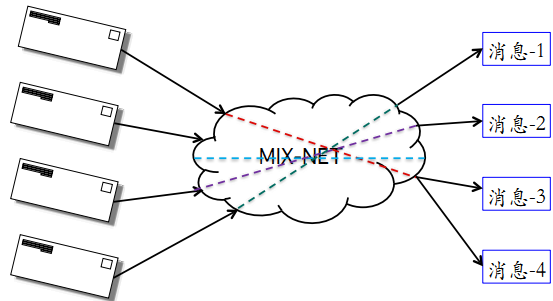
消息在不同服务器之间随机转发，最终发送给目的节点
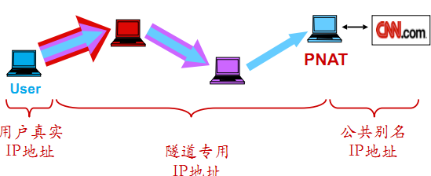
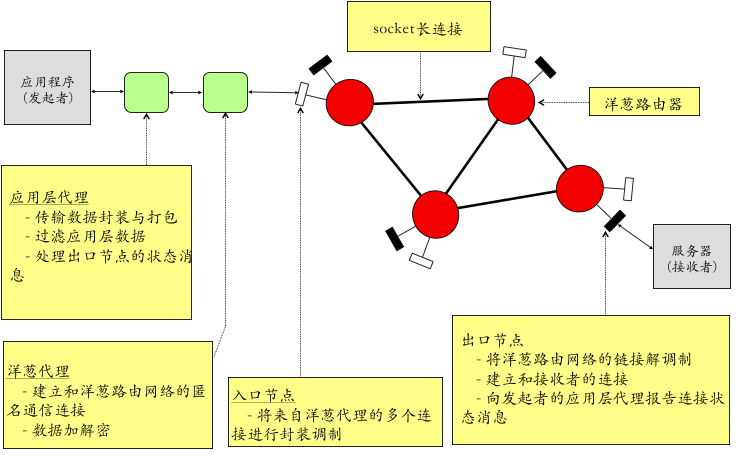
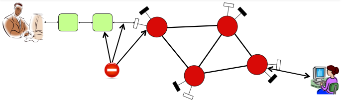